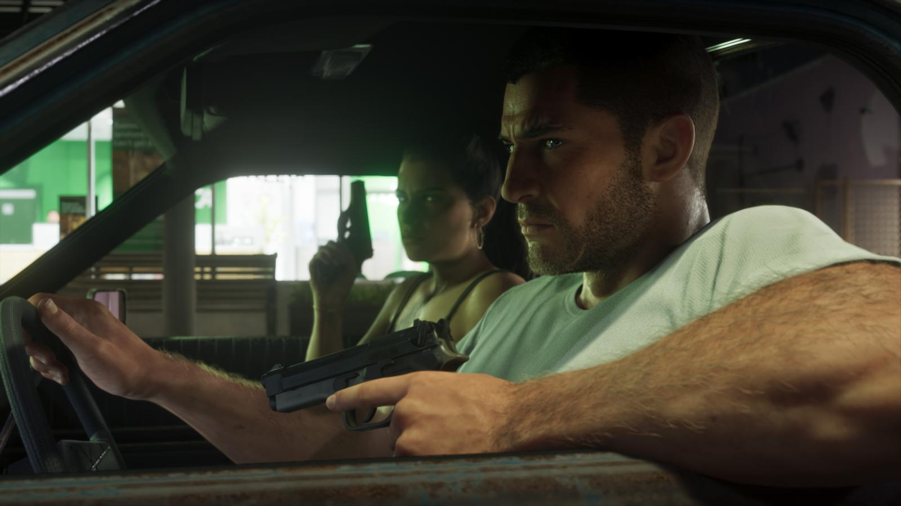

Отпуск ради GTA 6: как игроки готовятся к 19 ноября
Обновлено:

- По данным BambooHR, заявок на отпуск на третий четверг ноября на 9–17% больше обычного.
- Игроки берут от одного дня до двух недель — один бразилец отложил 10 дней.
- Автомастерская в Калифорнии заранее предупредила клиентов, что работа «может пострадать».
- Аналитики оценивают потери продуктивности в США в $5 млрд.
Четверг, который все ждут
19 ноября 2026 года — обычный четверг. Никакого праздника, никаких выходных. Но если вы работаете в отделе кадров американской компании, вы уже знаете: этот четверг — особенный. Заявки на отпуск на эту дату сыплются так, будто это Рождество.
Среда, 18 ноября, вечер. Ты закрываешь ноутбук и ставишь автоответ: «Вернусь 30 ноября». Телефон — в беззвучный режим. Консоль уже неделю как докачала игру, холодильник забит, друзья предупреждены. В полночь экран загорается логотипом Rockstar. Работа подождёт. Леонида — нет.
Цифры: HR видят рост
Компания BambooHR, которая делает софт для отделов кадров, проанализировала заявки клиентов и увидела: на третий четверг ноября отпусков просят на 9–17% больше, чем обычно в эту дату. Об этом 14 сентября написал журнал Money.
Игровой сайт Win.gg пошёл дальше и посчитал возможные потери: около $5 млрд продуктивности по всей стране. Логика простая: даже те, кто не возьмёт выходной, придут на работу после ночи с геймпадом — и, по их оценке, потеряют в среднем около двух часов работы на следующий день.
Цифра $5 млрд выбрана не случайно — её сравнивают с Супербоулом. По данным компании UKG, после главного матча года в США на работу не выходят около 22,6 млн человек, а потери оценивают в $5,2 млрд. То есть релиз видеоигры аналитики всерьёз ставят в один ряд с самым массовым спортивным событием страны.

Голоса: кто и сколько берёт
Wall Street Journal нашёл игроков, которые уже распланировали свой ноябрь. Вот трое из них.
«У нас будет пара дней в режиме „папа очень занят“».
Бад Баррусс, 36 лет, инженер-программист — берёт пять дней перед Днём благодарения (WSJ)
Гильерме Стефано, 34 года, из Сан-Паулу, отложил 10 дней отпуска. Он называет себя комплиционистом — тем, кто проходит игру на 100%. Для него это не рекорд: на Red Dead Redemption 2 он в своё время взял 20 дней.
«Её переносили столько раз, что я решила: если 19 ноября — это точно, я беру с четверга по четверг».
Анна Рэй, 30 лет, представитель медицинской компании и рестлер из Арканзаса (WSJ)
В соцсетях — примерно то же самое, только без цифр. Один из пользователей X сформулировал за всех: «Я знаю людей, которые возьмут недели. И я один из них».
Бизнес: «операции могут пострадать»
Некоторые работодатели решили не бороться, а предупредить заранее. Автомастерская в Калифорнии, которая занимается спортивной техникой, повесила объявление, которое разошлось по сети:
«Проанализировав многочисленные конфликты в графиках сотрудников, руководство пришло к выводу, что в связи с выходом Grand Theft Auto VI нормальная работа может быть нарушена».
Объявление калифорнийской мастерской (по Money)
Звучит как шутка, но это реальный документ. И он показывает главное: GTA 6 перестала быть «игрой для геймеров» — её релиз учитывают в рабочих графиках, как спортивный финал. Ещё в прошлой сводке центровой NBA предсказывал «просадку» профессионального спорта — подробности здесь.
Скептики
- «Это маркетинг». Исследования с громкими цифрами публикуют сервисы, которым выгодно попасть в новости на волне хайпа.
- «Сюжет никуда не денется». Игра не исчезнет через неделю — спешить нужно разве что ради того, чтобы избежать спойлеров.
- «Первые дни — это очереди на серверах». Опыт больших релизов подсказывает: в первый вечер загрузки и магазины могут тормозить. Предзагрузка 12 ноября частично решает проблему — чек-лист здесь.
А как у нас
В России 19 ноября — тоже будний четверг. Чтобы получить четыре дня подряд (четверг — воскресенье), достаточно взять два дня отпуска. Неделя «с четверга по четверг», как у Анны Рэй, — это пять рабочих дней. Но сначала игру нужно купить: PS Store в России не работает, о вариантах — Как купить GTA 6 в России.
Настроение недели
Если на прошлой неделе игроки спорили о деньгах — коллекционке за $400, то сейчас спорят о времени. Главный вопрос в комментариях звучит уже не «брать или не брать», а «сколько дней брать». Как у вас: отпуск, больничный или ночные смены после работы? Сколько дней до релиза осталось прямо сейчас — Отсчёт до GTA 6 в вашем часовом поясе.
Источники: Money (данные BambooHR, Win.gg, UKG; 14.09.2026); Yahoo Finance / Wall Street Journal (истории игроков, 30.08.2026); Futurism (02.09.2026).